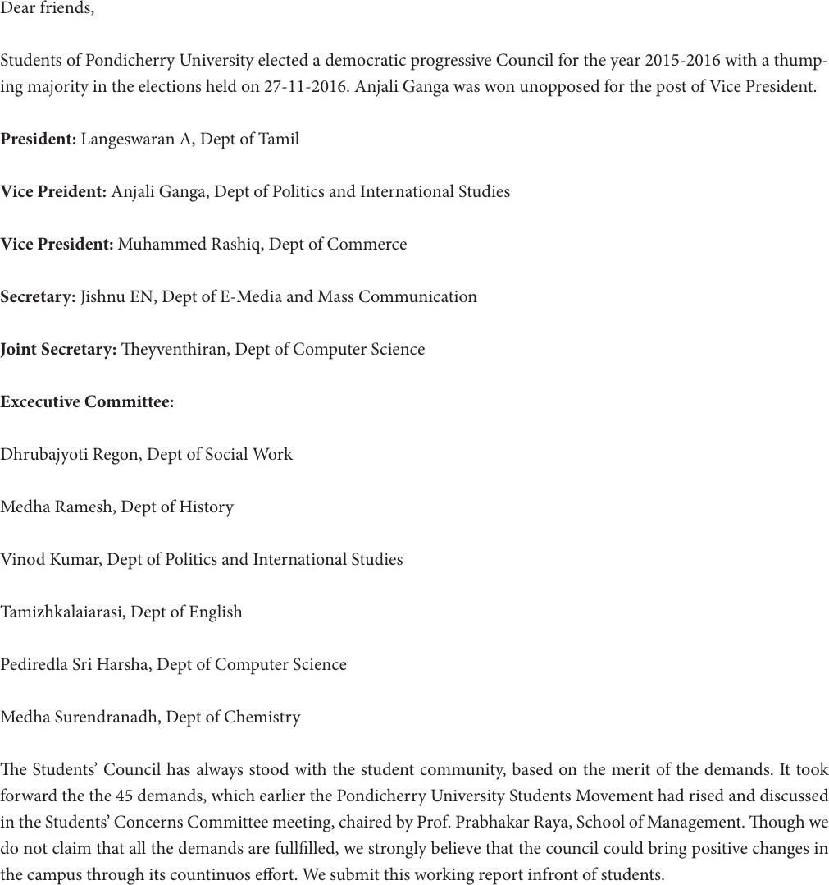

Dear friends,
Students of Pondicherry University elected a democratic progressive Council for the year 2015-2016 with a thump-
ing majority in the elections held on 27-11-2016. Anjali Ganga was won unopposed for the post of Vice President.
President: Langeswaran A, Dept of Tamil
Vice Preident: Anjali Ganga, Dept of Politics and International Studies
Vice President: Muhammed Rashiq, Dept of Commerce
Secretary: Jishnu EN, Dept of E-Media and Mass Communication
Joint Secretary: eyventhiran, Dept of Computer Science
Excecutive Committee:
Dhrubajyoti Regon, Dept of Social Work
Medha Ramesh, Dept of History
Vinod Kumar, Dept of Politics and International Studies
Tamizhkalaiarasi, Dept of English
Pediredla Sri Harsha, Dept of Computer Science
Medha Surendranadh, Dept of Chemistry
e Students’ Council has always stood with the student community, based on the merit of the demands. It took
forward the the 45 demands, which earlier the Pondicherry University Students Movement had rised and discussed
in the Students’ Concerns Committee meeting, chaired by Prof. Prabhakar Raya, School of Management. ough we
do not claim that all the demands are fulllled, we strongly believe that the council could bring positive changes in
the campus through its countinuos eort. We submit this working report infront of students.